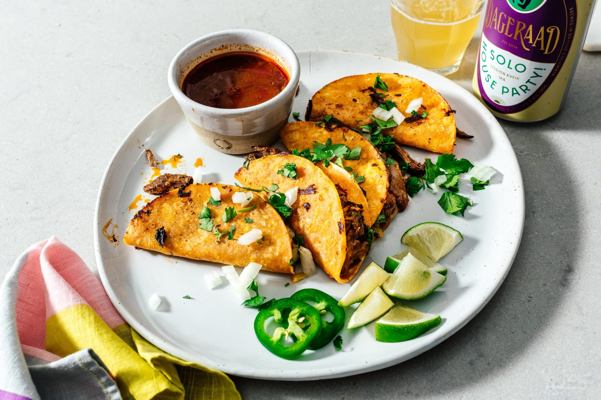

Birria Tacos Recipe

INGREDIENTS
- 1.5 lb beef shank
- 1 lb cab sirloin or other roast/steak
- 3 dried guajillo peppers see notes
- 1 can chipotle peppers in adobo
- 1/4 cup vinegar
- 1/2 cup crushed tomatoes
- 5 cloves garlic
- 1 tsp dried oregano
- 1/2 tsp smoked paprika
- 1 medium onion chopped
- 1 cinnamon stick
- 2 bay leaves
- 6 whole cloves
- chicken stock to cover sodium free, about 1 quart
Tacos
- 4" corn or flour tortillas
INSTRUCTION
- Bring a large pot of water to a boil and then remove from heat. Soak your dried guajillo peppers for 15 minutes. Meanwhile, cube your cab sirloin, then season both the steak and the shank with salt and pepper. Set aside.
- Add marinade ingredients to the blender. When the peppers are done soaking, hold them by the tip over the sink and use scissors to cut the stem off and allow the seeds to fall out, then add to blender. Blend the marinade into a smooth paste. Marinate the meats for a minimum of two hours or up to overnight.
- Set your Instant Pot on saute high or use a skillet over medium heat. Add 1-2 tbsp oil, then saute the onions until golden and translucent (6-8 minutes).
- Add the meats, marinade, bay leaves, cinnamon stick, and cloves to the pot. Cover with chicken broth, then set to high pressure for 45 minutes. If using a slow cooker or stovetop, set to low heat for 4-6 hours.
- When the instant pot is finished, allow a natural release, then remove the meat. Shred, set aside, and discard the bones.
- Warm up some tortillas, then dip the tortillas in the stew. Build your tacos, top with any optional toppings, then fry over medium heat on a nonstick skillet. Enjoy immediately, preferably with a margarita or cold Mexican beer.
GO TO RECIPEES